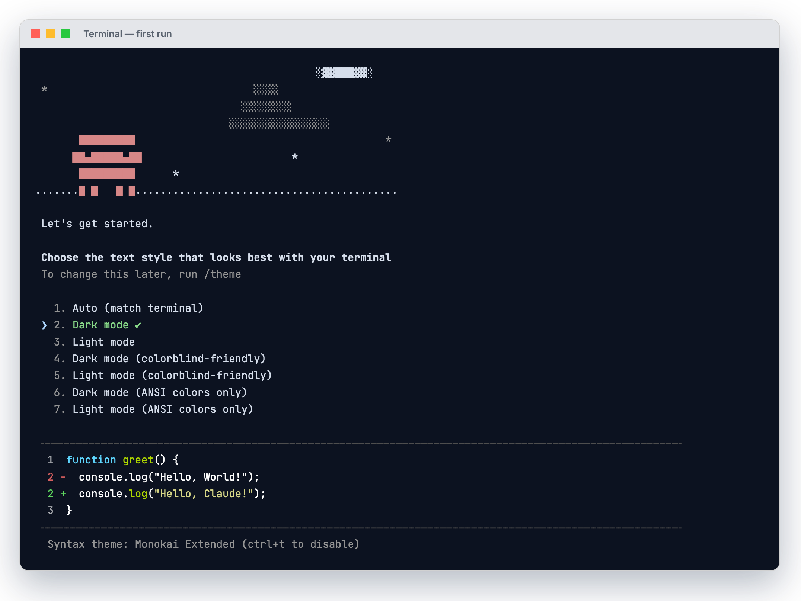

The captures

The strongest image in the set. Anthropic's own installer, run for real, printing both the success message and — unprompted — the exact PATH warning the deck spends six slides on. The fix it prints is byte-identical to the command on Slide 40, which is first-party confirmation that the deck's advice is correct.
It installed 2.1.247 because the install script takes the latest channel; your machine runs 2.1.231, the current stable. Both numbers are correct.
tmux new-session "env HOME=/tmp/cc-sandbox4 bash install.sh" → capture-pane -e Sandbox HOME only. Your real install was verified unchanged afterwards.
command not foundReal capture
The single most important image in the deck. This is a genuine reproduction, not a simulation — the shell really could not find claude because ~/.local/bin was removed from PATH.
script -q /tmp/36.typescript /bin/zsh -f -c 'PATH=/usr/bin:/bin:/usr/sbin:/sbin; claude' → zsh:1: command not found: claude
claude --versionReal capture
Your actual installed version.
script -q /tmp/42.typescript claude --version → 2.1.231 (Claude Code)
claude doctorReal capture
Your real diagnostic output. 0 of the 10 competitor videos mention this command (per the Aug 27 research pass over 10 install videos, 27,661 words, recorded in claude-code-install-shooting-outline.txt) — the deck's clearest point of differentiation. Captured after clearing the stale Aug 24 failure record, so it reads clean.
script -q /tmp/43.typescript claude doctor

The genuine first-run onboarding screen, including the Claude logo and the live diff preview. It appears automatically only on a brand-new profile — which is why the sandbox HOME was needed — though it can be reopened later with /theme.
tmux new-session "env HOME=/tmp/cc-tui-home claude" → capture-pane -e

Real login screen. Note it independently confirms the deck's Slide 9 claim: the options are Pro, Max, Team, or Enterprise subscription, Console API billing, or a third-party platform. No free tier listed.
Same session, one Enter later. No login was completed.

Confirms Slide 46 is accurate — Claude Code really does print a URL to copy and a "Paste code here if prompted" field. The OAuth URL is deliberately blacked out; the original contained a live code_challenge and state that must not be published.
Same session. URL replaced with █ before rendering. Flow abandoned — never authorised.

This capture caught — and fixed — a factual error in the deck
Slide 51 used to say you were "only granting reading here." The real prompt says "Claude Code'll be able to read, edit, and execute files here." The slide has been corrected to match and now reads "read, edit, and execute." This is precisely the argument for using real captures.
tmux, real HOME, fresh empty project dir → prompt appears. Ctrl-C'd without answering.

Live claude.com/pricing, captured today at 2560×1720.
headless Chrome, --force-device-scale-factor=2

Live claude.com/download. Shows the exact three builds the slide names: macOS, Windows, Windows ARM64.

Live git-scm.com/downloads/win, so the client sees the real page before they land on it.